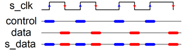

User can find a simulation example under $FAB_ROOT/fabric_files/fabric_simulation_example/. (This has been tested under Vivado simulator)
To setup simulation enviroment, the user should has a eFPGA top module to instantiate the fabric and the configuration module , as the example eFPGA_v2_top_sky130_sim.v
moduleeFPGA_top(I_top,T_top,O_top,A_config_C,B_config_C,CLK,SelfWriteStrobe,SelfWriteData,Rx,ComActive,ReceiveLED,s_clk,s_data);...ConfigConfig_inst(...);//All Frame data register modules...//All Frame select modules...eFPGAInst_eFPGA(.Tile_X0Y1_A_I_top(I_top[23]),.Tile_X0Y1_B_I_top(I_top[22]),.Tile_X0Y2_A_I_top(I_top[21]),.Tile_X0Y2_B_I_top(I_top[20]),.Tile_X0Y3_A_I_top(I_top[19]),.Tile_X0Y3_B_I_top(I_top[18]),.Tile_X0Y4_A_I_top(I_top[17]),.Tile_X0Y4_B_I_top(I_top[16]),.Tile_X0Y5_A_I_top(I_top[15]),.Tile_X0Y5_B_I_top(I_top[14]),.Tile_X0Y6_A_I_top(I_top[13]),.Tile_X0Y6_B_I_top(I_top[12]),.Tile_X0Y7_A_I_top(I_top[11]),.Tile_X0Y7_B_I_top(I_top[10]),.Tile_X0Y8_A_I_top(I_top[9]),.Tile_X0Y8_B_I_top(I_top[8]),.Tile_X0Y9_A_I_top(I_top[7]),.Tile_X0Y9_B_I_top(I_top[6]),.Tile_X0Y10_A_I_top(I_top[5]),.Tile_X0Y10_B_I_top(I_top[4]),.Tile_X0Y11_A_I_top(I_top[3]),.Tile_X0Y11_B_I_top(I_top[2]),.Tile_X0Y12_A_I_top(I_top[1]),.Tile_X0Y12_B_I_top(I_top[0]),...);endmodule
And then under the testbench tb_eFPGA_verilog.v, user can assign the input signals to tb_O_top and the output signals to tb_I_top. If user has not set the IO constraints in the benchmark netlist, nextpnr will assign inputs and outputs automatically. To find out the specific inputs and outputs of the benchmark netlist, user can use the fasm file and eFPGA top module for referencing.
FASM example
# Cell counter[0]$iob at X0Y9.A
X0Y9.GND0.A_T
# Cell counter[10]$iob at X0Y11.B
X0Y11.GND0.B_T
# Cell counter[11]$iob at X0Y13.B
X0Y13.GND0.B_T
# Cell counter[12]$iob at X0Y11.A
X0Y11.GND0.A_T
# Cell counter[13]$iob at X0Y12.A
X0Y12.GND0.A_T
# Cell counter[14]$iob at X0Y15.B
X0Y15.GND0.B_T
# Cell counter[15]$iob at X0Y12.B
X0Y12.GND0.B_T
# Cell counter[1]$iob at X0Y10.B
X0Y10.GND0.B_T
# Cell counter[2]$iob at X0Y10.A
X0Y10.GND0.A_T
# Cell counter[3]$iob at X0Y9.B
X0Y9.GND0.B_T
# Cell counter[4]$iob at X0Y16.A
X0Y16.GND0.A_T
# Cell counter[5]$iob at X0Y15.A
X0Y15.GND0.A_T
# Cell counter[6]$iob at X0Y14.A
X0Y14.GND0.A_T
# Cell counter[7]$iob at X0Y13.A
X0Y13.GND0.A_T
# Cell counter[8]$iob at X0Y14.B
X0Y14.GND0.B_T
# Cell counter[9]$iob at X0Y16.B
X0Y16.GND0.B_T
FABulous is coming with 3 different simulation methods configuration module,
Serial (Mode 0)
Send configuration in through UART
Parallel (Mode 1)
Use parallel configuration port
Bitbang configuration port (To be supported in the testbench)
We did a quick asynchronous serial configuration port interface that is ideal for microcontroller configuration. It uses the original CPU interface that we have in our TSMC chip. The idea of the protocol is as follows:

We drive s_clk and s_data, on each rising edge of s_clock, we sample data and on the falling edge, we sample control.
Both values get shifted in a separate register. If the control register ses the bit-pattern x”FAB0” it samples the data shift register into a hold register and issues a one-cycle strobe output (active 1).
The next figure shows the enable generation (and input sampling) for generating the enable signals for